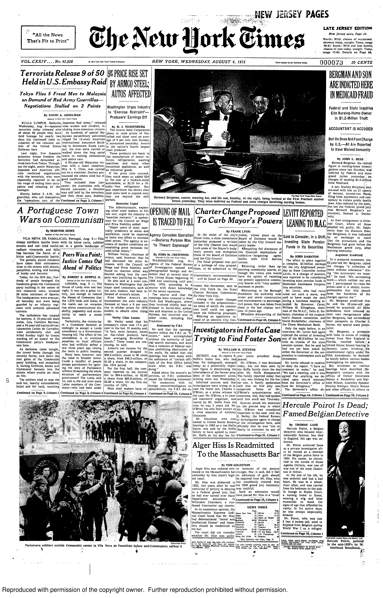
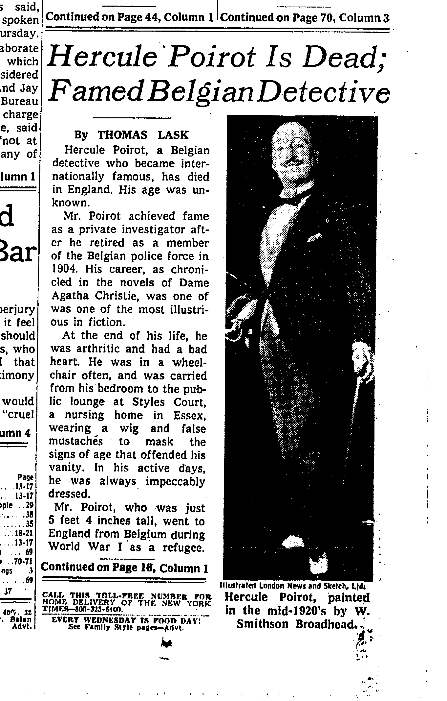
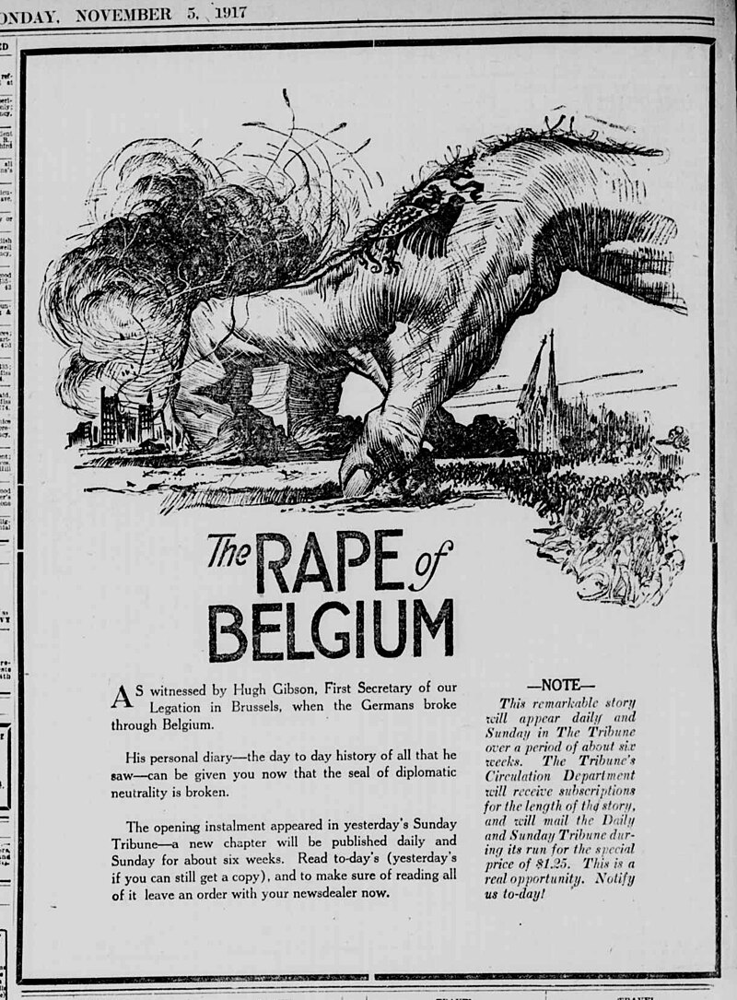
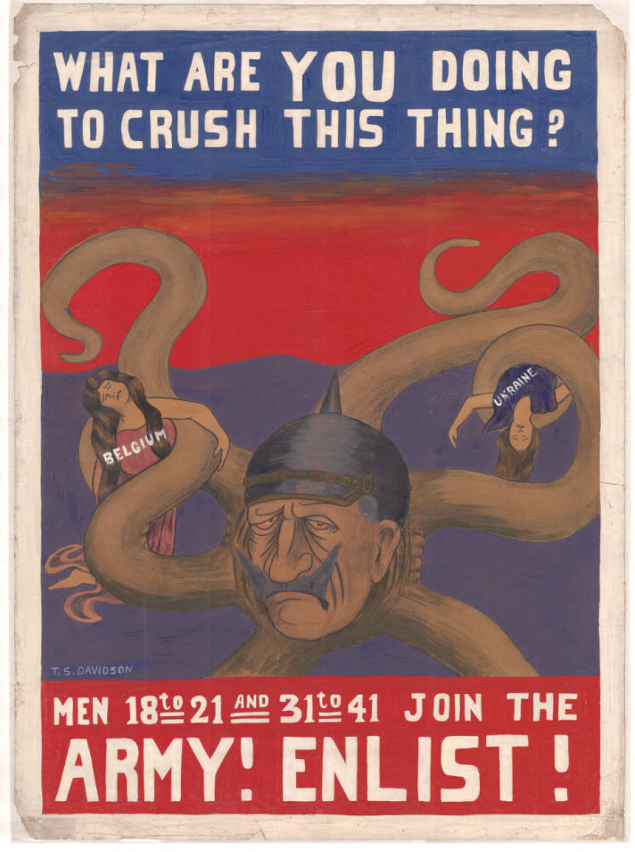
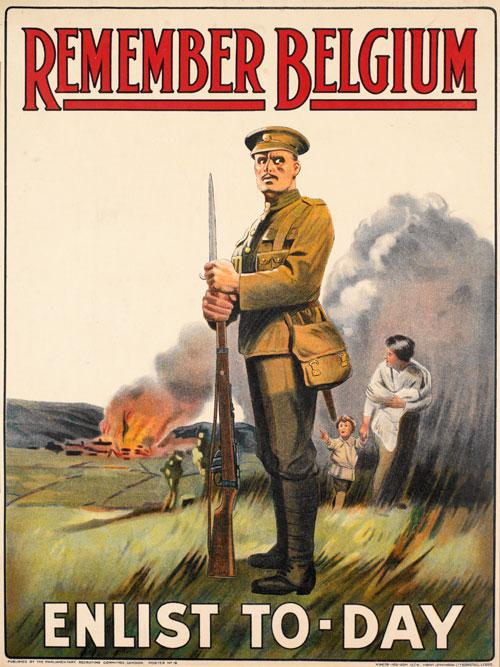

The most famous woman writer ever, perhaps the most famous writer, period.
Introduction
The Golden Age
Historical Context
“Queens of Crime”
“Ah!” I said, “You’ve been reading detective stories.”
She admitted that she had. (14)
I do not see why I should be supposed to be totally devoid of intelligence. After all, I read detective stories, and the newspapers, and am a man of quite average ability. (65)
“Why, he’s Hercule Poirot! You know who I mean—the private detective. They say he’s done the most wonderful things—just like detectives do in books.” (72)
Peaceful social settings; little on-stage violence or sexuality; comforting resolution.
Country house, or other removed location. People know each other. A microcosm of society.
The generic expectations of the detective novel are known, both within the world of the novel and as an understanding between author and readers.
“mark you, monsieur, my work was interesting work. The most interesting work there is in the world.”
“Yes?” I said encouragingly…
“The study of human nature, monsieur!”





“Able-bodied men are apt to leave the place early in life, but we are rich in unmarried ladies and retired military officers.” (7)
“[Ackroyd] encourages cricket matches, Lads’ Clubs, and Disabled Soldiers’ Institutes.” (8)
I have come to tell you a terrible fact.
Only one out of ten of you girls can ever hope to marry. This is not a guess of mine. It is a statistical fact.
Nearly all the men who might have married you have been killed. You will have to make your way in the world as best you can.
(Speech by Senior Mistress of Bournemouth High School for Girls, 1917)
Our village, King’s Abbot, is, I imagine, very much like any other village. (7)
There are only two houses of any importance in King’s Abbot. One is King’s Paddock, left to Mrs. Ferrars by her late husband. The other, Fernly Park, is owned by Roger Ackroyd.
Ackroy always interested me by being a man more impossibly like a country squire than any country squire could really be. He reminds me of the red-faced sportsmen who always appeared early in the first act of an old-fasioned musical comedy…
Of course Ackroyd is not really a country squire. HE is an immensely successful manufacturer of (I think) wagon wheels. (7–8)
A simple straightforward English girl—I may be old-fashioned, but I think the genuine article takes a lot of beating. (32)
The things young women read nowadays and profess to enjoy positively frightens me. (32)